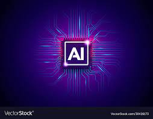
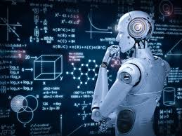
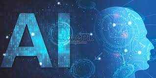

|
| Blog by Hruday Prabhath Dhanikonda |
By Hruday Prabhath Dhanikonda , on 17th July,2023 7:00pm
AI is the development of intelligent machines that can perform tasks that typically require human intelligence. The field encompasses various sub-disciplines, including machine learning, natural language processing, computer vision, and robotics. Through advanced algorithms and neural networks, AI systems can analyze vast amounts of data, recognize patterns, make predictions, and learn from experience.
AI has permeated numerous sectors and industries, transforming the way we live and work. In healthcare, AI-driven diagnostic tools can analyze medical images, assist in disease detection, and recommend personalized treatment plans. In finance, AI algorithms enable automated trading, fraud detection, and risk assessment. Transportation and logistics benefit from AI-driven route optimization, autonomous vehicles, and smart traffic management. Moreover, AI has made its mark in entertainment, marketing, cybersecurity, agriculture, and environmental conservation, among many other domains.
While AI offers immense possibilities, it also raises significant challenges. One such concern is the ethical implications of AI deployment. Ensuring transparency, accountability, and fairness in AI algorithms is crucial to prevent bias, discrimination, and the perpetuation of societal inequalities. Safeguarding data privacy and security also becomes paramount, given the sensitive information AI systems often process. Another key challenge is the impact of AI on employment. While AI can streamline processes and boost productivity, there are concerns about job displacement and the need for upskilling the workforce to adapt to an AI-driven economy. Striking a balance between automation and job creation becomes essential for a smooth transition.
As AI continues to evolve, its future holds great promise. Breakthroughs in deep learning, reinforcement learning, and quantum computing have the potential to unlock even more sophisticated AI systems. We can anticipate advancements in areas such as natural language understanding, emotional intelligence, and context-aware computing, enabling more nuanced interactions between humans and machines. Collaboration between AI and human intelligence, known as augmented intelligence, is also gaining traction. By combining the strengths of both humans and machines, we can tackle complex challenges, achieve breakthrough discoveries, and foster innovation in ways previously unimaginable.
Artificial Intelligence represents a defining moment in human history, offering boundless opportunities and posing complex questions. As we navigate this technological frontier, it is imperative that we embrace AI's potential while remaining vigilant about the ethical and societal implications. By fostering responsible development, ensuring inclusivity, and leveraging AI as a tool for human advancement, we can build a future where AI enhances our lives, augments our capabilities, and paves the way for a more prosperous and equitable world.